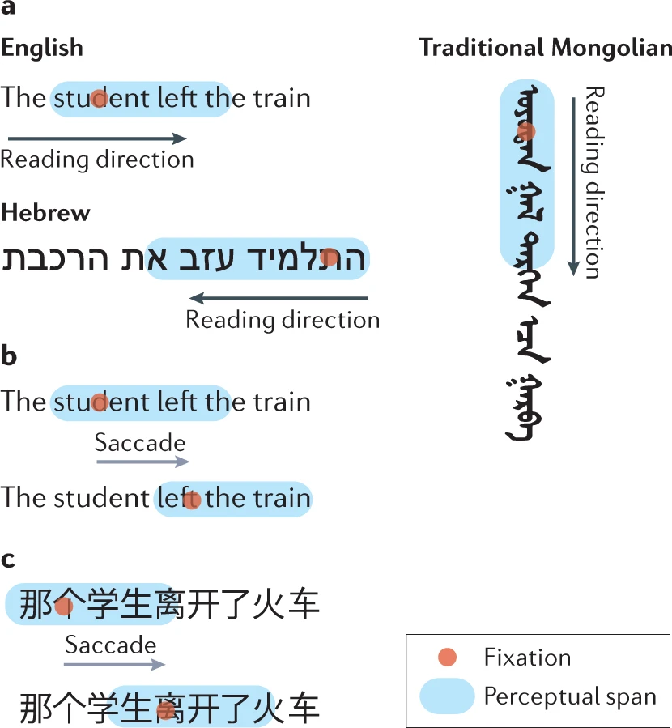
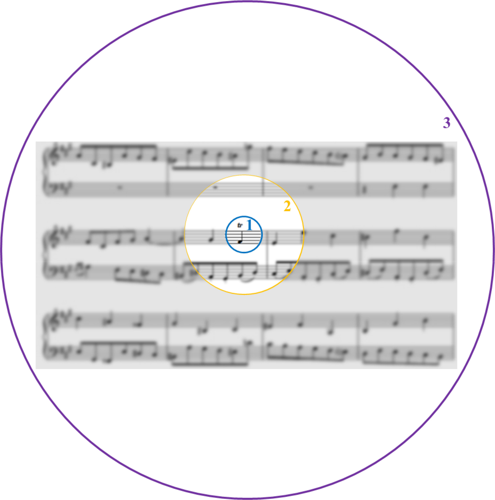
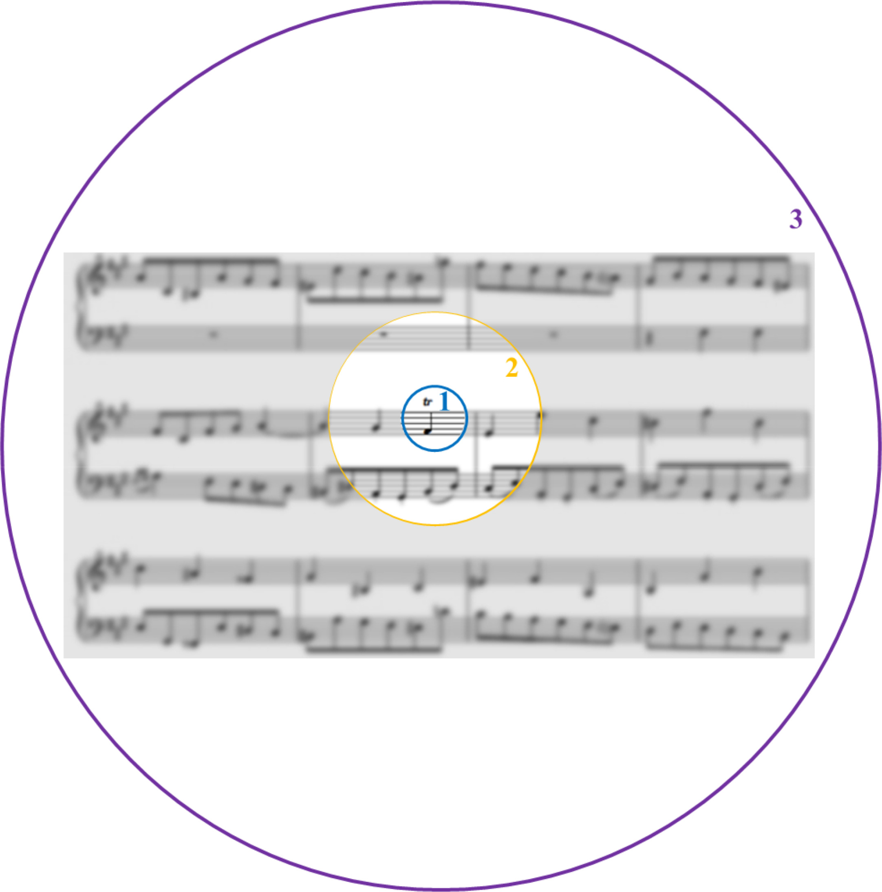
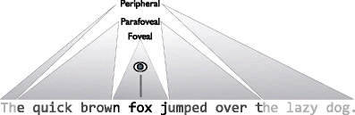
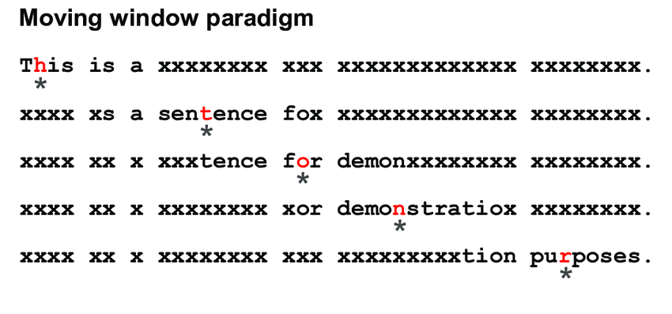
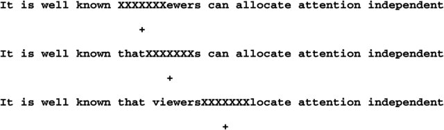
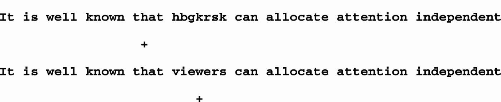

Week 2
Reading

Today's roadmap
- Basic patterns
- Sources of information
- Reading eye movement measures
- Eye movements and language processing: Word recognition
- Eye movements and language processing: Sentence processing
Basic patterns
Basic patterns
- Average fixation duration: 200-250ms
- Average saccade length: 7-9 letters
- Saccade length unaffected by the size of the text
- 10-15% of saccades are regressive
- Return sweep from the end of line to the beginning of the next line
- Individual difference in fixation duration and saccade length
Effect of orthography

Sources of information during reading
Sources of information during reading
Foveal vs. Parafoveal vision
 

Sources of information during reading
Perceptual span in reading
- Perceptual span is asymmetrical during reading.
- In English, this is about 3-4 letters to the left of the fixation center and 14-15 letters to the right.
- Regardless of the writing system, the perceptual span is relatively fixed when measured by number of words (~2 words).
Sources of information during reading
Perceptual span in reading

Sources of information during reading
Perceptual span in reading
- Foveal processing is vital in reading.
- If no info is available in the fovea, reading is extremely difficult.
- Parafoveal vision facilitates reading by allowing different types of info to be processed there:
- Orthography (jugde - judge)
- Phonology (sent - cent)
- Morphology
Sources of information during reading
Experimental paradigms
- Gaze-contingency paradigms
Experimental paradigms
Moving window / Moving mask paradigms


Experimental paradigms
Boundary paradigm

Reading eye movement measures
Reading eye movement measures
Word level:
- First-fixation duration: the duration of the first fixation on a word.
- Single-fixation duration: those cases where only a single fixation is made on a word.
- Gaze duration: the sum of all fixations on a word prior to moving to another word.
- Probability of skipping
Reading eye movement measures
Sentence level (region of interest):
- First-pass duration: first fixation until first time leaving the region.
- Go-past / Regression path duration: first fixation until first time leaving the region to the right.
- Second-pass duration: all refixations on a region after the eye has already moved past that region.
- Total duration: first-pass + second-pass
Eye movements and language processing: Word recognition
Eye movements and language processing: Word recognition
Time needed to recognise a visual word depends on:
- Word frequency
- Word length
- Word familiarity
- Age-of-acquisition
- Lexical ambiguity
Eye movements and language processing: Word recognition
Time needed to recognise a visual word depends on:
- Word frequency
- Word length
- Word familiarity
- Age-of-acquisition
- Lexical ambiguity
- Balanced ambiguous words (coach) > unambiguous words
- Balanced ambiguous words (coach) > biased ambiguous words (bark)
Eye movements and language processing: Word recognition
Time needed to recognise a visual word depends on:
- Word frequency
- Word length
- Word familiarity
- Age-of-acquisition
- Lexical ambiguity
- Morpheme frequency
- Transparent compound words (punish+ment) &
- Opaque compounds (casual+ty)
Eye movements and language processing: Word recognition
Time needed to recognise a visual word depends on:
- Word frequency
- Word length
- Word familiarity
- Age-of-acquisition
- Lexical ambiguity
- Morpheme frequency
- Contextual constraint
- Lexical or post-lexical effects?
Eye movements and language processing: Sentence processing
Eye movements and language processing: Sentence processing
Incrementality of sentence processing
(1a) Since Jay always jogs a mile and a half this seems like a very short distance to him.
(1b) Since Jay always jogs a mile and a half seems like a very short distance to him.
Sentence processing during reading
Sentence processing vs. word recognition
(2a) The woman took the warm cake out of the oven and frosted it.
(2b) The woman walked over to the oven and opened it.
Sentence processing during reading
Sentence processing vs. word recognition
Reading time decreases as predictability increases.
Does this mean that word recognition is facilitated by high predictability?
Not necessarily: Only part of a word's reading time is spent on word recognition.
Evidence show that the effect of word frequency (on word recognition) does not interact with the effect of predictability.
This means that the effect of predictability on reading time may not be on word recognition itself (but on the processes after a word is identified).
Sentence processing during reading
Is sentence processing incremental?
Sentence processing during reading
Is sentence processing incremental?
Do we interpret a word as soon as it is identified, or do we wait until the end of a sentence/phrase?
Sentence processing during reading
Is sentence processing incremental?
Frazier and Rayner (1982)
(3a) Since Jay always jogs a mile this seems like a short distance to him.
(3b) Since Jay always jogs a mile seems like a short distance to him.
The direct object analysis of a mile is correct in (3a) but not in (3b)
Sentence processing during reading
Is sentence processing incremental?
Frazier and Rayner (1982)
Results: Upon encountering seems in (3b) compared with (3a), readers were more likely to make a regressive saccade.
At seems, the reader must already committed to the direct object analysis of a mile, otherwise seems would not be more "surprising" in (3b) than (3a).
Sentence processing during reading
Is sentence processing incremental?
Rayner et al. (2004)
(4a) John used a knife to chop the large carrots for dinner.
(4b) John used a pump to inflate the large carrots for dinner.
Carrots is plausible in (4a) but not (4b).
Sentence processing during reading
Is sentence processing incremental?
Rayner et al. (2004)
Results: Increased reading time on carrots when it's anomalous (4b) than plausible (4a).
This effect is as early as the first fixations on the critical word (300ms).
Which suggests that by 300ms, the reader has already begun the process of integrating the word's meaning into the sentence (otherwise plausible vs. anomalous wouldn't make a difference).
Sentence processing during reading
Is sentence processing incremental?
Syntactic parsing is incremental in reading (Frazier and Rayner (1982)).
Semantic interpretation is incremental in reading (Rayner et al. (2004)).
Sentence processing during reading
Serial vs. parallel processing
Do we construct only one syntactic analysis and semantic interpretation at a time?
Or can we entertain multiple analyses simultaneously?
Sentence processing during reading
Serial vs. parallel processing
Serial models: Garden path model (Frazier 2016); ACT-R (Lewis 2013); Rational left-corner parser (Hale 2011)
Parallel models: Constraint-based models (e.g. MacDonald 1994); Surprisal model (Levy 2008)
Hybrid models: Unrestricted race model (van Gompel 2000)
Sentence processing during reading
Serial vs. parallel processing
Support for parallel models (constraint-based models):
- Syntactic parsing is not deterministic
- Lexical biases: e.g. remember vs. suspect
Sentence processing during reading
Serial vs. parallel processing
However, syntactic ambiguity doesn't increase reading time:
(5a) The car of the driver with the moustache was cool.
(5b) The son of the driver with the moustache was cool.
- Parallel models would assume more processing difficulty in (5b) than (5a) as a result of competing structures.
- However no evidence that (5b) takes longer to read than (5a).
Sentence processing during reading
Serial vs. parallel processing
However, syntactic ambiguity doesn't increase reading time:
(5a) The car of the driver with the moustache was cool.
(5b) The son of the driver with the moustache was cool.
- Newer parallel models resolve this by putting difficulty on bias-flipping input, rather than the ambiguity itself.
Sentence processing during reading
Serial vs. parallel processing
Still ongoing...
Returning to the other advantage of parallel models: lexical bias
Newer serial models allow lexical bias to play a role by proposing that parsing decisions are probabilistic.
Today's roadmap
- Eye movements in reading: fundamental characteristics
- Eye movements in reading: more details
- Sentence processing during reading
Today's roadmap
- Eye movements in reading: fundamental characteristics
-
- Average fixation duration, average saccade length (in letters)
- Regressive saccades
- Return sweeps
- Eye movements in reading: more details
- Sentence processing during reading
Today's roadmap
- Eye movements in reading: fundamental characteristics
- Eye movements in reading: more details
-
- Foveal vs. parafoveal vision; Experimental paradigms and the perceptual span
- Control of eye movements during reading: where and when to move the eye
- Sentence processing during reading
Today's roadmap
- Eye movements in reading: fundamental characteristics
- Eye movements in reading: more details
- Sentence processing during reading
-
- Different processes of word recognition vs. sentence processing
- Sentence processing is highly incremental
- Serial processing vs. Parallel processing
Today's roadmap
- Eye movements in reading: fundamental characteristics
- Eye movements in reading: more details
- Sentence processing during reading